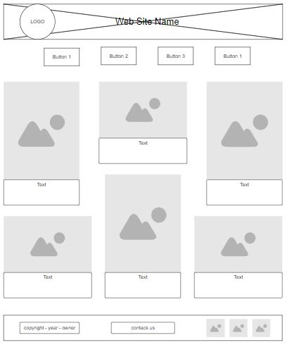

Site Name
Moscow Chamber of Commerce and Industry
Site Purpose
- Creating a platform for the business community
- Providing information about events and resources
Scenarios
- What events will the Chamber hold this month to facilitate the establishment of ties between enterprises?
- Where can I find the contact information of the Board of Directors of the Chamber?
- What measures does the Chamber provide to support entrepreneurs?
- What educational programs are available to members of the Chamber?
Color Schema
Main Color: Blue. It can be used for headings, navigation bar backgrounds, and accent elements to highlight important information. It can also be used for links or buttons to emphasize their importance.
Second color: white or light gray. It can be used for background content to create a clean and professional look. It can also be used for text to ensure good readability and make the content more pleasant to read.
Typography
Main font: Roboto Condensed. This font has a modern and professional look, which is suitable for use in headings and subheadings. It can be effective for creating accent elements and highlighting important information.
Second font: Open Sans. This font is usually used for the main text on websites. It is readable and versatile, which makes it a good choice for paragraphs, lists, and other basic content on the site.
Wireframe
Sketch of the layout of the chamber's home page
